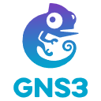
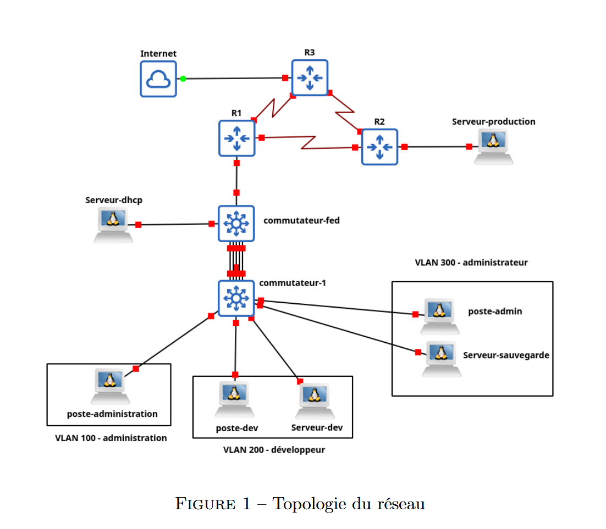

Résumé de la SAESAE Summary
Objectif :Objective: Mettre en place un réseau informatique pour une petite entreprise, en utilisant le logiciel GNS3, permettant la virtualisation des appareils. Set up a computer network for a small business, using GNS3 software, allowing device virtualization.
Au cours de ce projet, j'ai pu acquérir des compétences concrètes dans l'administration réseau, notamment la gestion des During this project, I was able to acquire concrete skills in network administration, in particular the management of VLANs, la sécurité réseau via la mise en place d', network security through the implementation of ACL (listes d'accès)ACLs (access control lists), ainsi que la gestion de serveurs (, as well as server management (DHCP, DNS...). J'ai aussi découvert l'utilisation du logiciel ). I also discovered the use of GNS3. software.
Environnement et OutilsEnvironment and Tools

GNS3
Logiciel d'émulation de réseaux complexes. Il a permis de virtualiser l'ensemble de l'architecture (routeurs, commutateurs et serveurs) pour reproduire fidèlement l'environnement de la PME.Complex network emulation software. It made it possible to virtualize the entire architecture (routers, switches, and servers) to faithfully reproduce the SME environment.
Cisco
Équipements réseau professionnels (routeurs et commutateurs) émulés sous GNS3. L'ensemble de l'architecture repose sur la configuration de l'IOS Cisco pour le routage et la commutation.Professional network equipment (routers and switches) emulated under GNS3. The entire architecture relies on configuring Cisco IOS for routing and switching.
Debian
Distribution GNU/Linux utilisée pour simuler les serveurs de la topologie. Choisie pour sa stabilité, elle a permis de faire tourner efficacement les services réseaux au sein de GNS3 de manière plus simple.GNU/Linux distribution used to simulate the servers in the topology. Chosen for its stability, it allowed network services to run efficiently within GNS3 in a simpler way.
Architecture RéseauNetwork Architecture

Grandes étapes techniquesMain technical steps
1. Segmentation et VLANs1. Segmentation and VLANs
Création de VLANs dédiés pour séparer logiquement les flux (Administration, Développeur, Administrateur). Configuration de liens "Trunk" (802.1Q) et sécurisation en modifiant le VLAN natif par défaut (VLAN 999).
Creation of dedicated VLANs to logically separate flows (Administration, Developer, Administrator). Configuration of "Trunk" links (802.1Q) and security by modifying the default native VLAN (VLAN 999).
2. Adressage et Routage2. Addressing and Routing
Mise en place de l'adressage IP sur les interfaces physiques et virtuelles (Implementation of IP addressing on physical and virtual interfaces (SVI). Configuration du protocole de routage dynamique ). Configuration of the dynamic routing protocol RIPv2 pour assurer la connectivité entre les différents routeurs de la topologie. to ensure connectivity between the various routers in the topology.
3. Redondance avec STP3. Redundancy with STP
Déploiement du protocole Deployment of the Spanning Tree (STP)Spanning Tree Protocol (STP) pour éviter les boucles réseau. Configuration stratégique des priorités ( to avoid network loops. Strategic configuration of priorities (Root Primary / Secondary) pour équilibrer la charge entre les commutateurs.) to load balance between switches.
4. Déploiement des Serveurs4. Server Deployment
Installation et configuration de serveurs sous Debian : mise en place d'un serveur DHCP (Installation and configuration of Debian servers: setup of a DHCP server (isc-dhcp-server) avec relais () with relay (ip helper-address), de serveurs Web (), Web servers (Apache2) et de transferts de fichiers synchronisés via ), and synchronized file transfers via Rsync.
5. Sécurisation (Port-Security & ACL)5. Security (Port-Security & ACL)
Activation du Activation of Port-Security ("mac-address sticky" et mode and "restrict") sur les commutateurs pour empêcher les connexions physiques non autorisées. Création d' mode) on switches to prevent unauthorized physical connections. Creation of ACL (Listes de Contrôle d'Accès)ACLs (Access Control Lists) pour filtrer les flux to filter HTTP, SSH et ICMPHTTP, SSH, and ICMP. traffic.
6. Accès Externe (NAT/PAT)6. External Access (NAT/PAT)
Configuration de la traduction d'adresses (Configuration of address translation (NAT dynamique avec surcharge / PATdynamic NAT with overload / PAT) sur le routeur de bordure pour permettre aux équipements du réseau privé d'accéder à Internet de façon sécurisée.) on the edge router to allow equipment on the private network to access the Internet securely.
Compétences validéesValidated Skills
Détail des Apprentissages Critiques (BUT1) mis en pratique lors de ce projet :Details of the Critical Learnings (BUT1) put into practice during this project:
- AC11.03 Configurer les fonctions de base du réseau local Configure the basic functions of the local network
- AC11.04 Maîtriser les rôles et les principes fondamentaux des systèmes d'exploitation afin d'intéragir avec ceux-ci pour la configuration et l'administration des réseaux et services fournis Master the roles and fundamental principles of operating systems to interact with them for the configuration and administration of networks and provided services
- AC11.06 Installer un poste client, expliquer la procédure mise en place Install a client workstation, explain the implemented procedure
- AC13.01 Utiliser un système informatique et ses outils Use a computer system and its tools
Analyse réflexiveReflective Analysis
Au cours de cette SAE, premier projet en réseau de l'année pour moi, j'ai pu apprendre de nombreuses connaissances en mettant en oeuvre les différentes notions vues en cours dans les domaines cités. Cependant, l'utilisation et notamment l'installation du logiciel During this SAE, my first network project of the year, I was able to learn a lot of knowledge by implementing the various concepts seen in class in the fields mentioned. However, the use and especially the installation of the GNS3, nouveau pour moi, m'a pénalisé et je n'ai pas pu avancer autant que je le souhaitais dans le projet. software, which was new to me, penalized me and I could not advance as much as I wanted in the project.